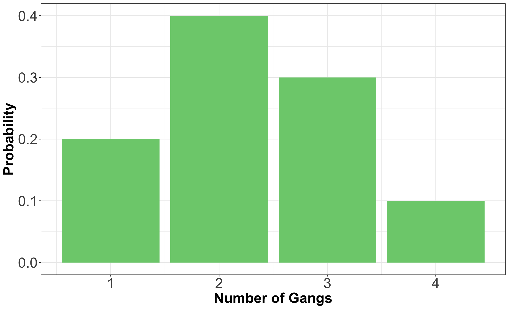
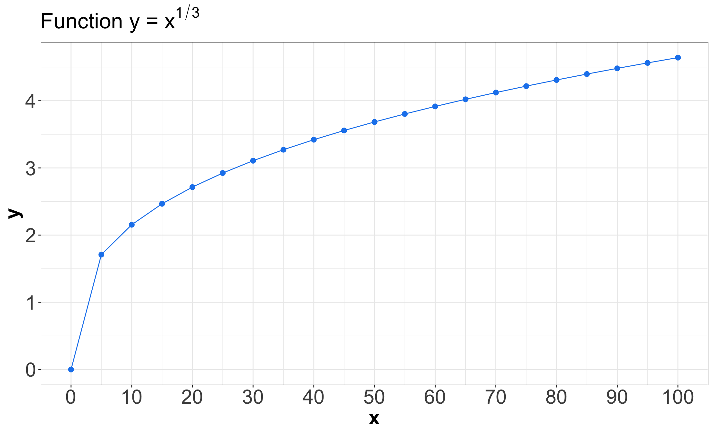
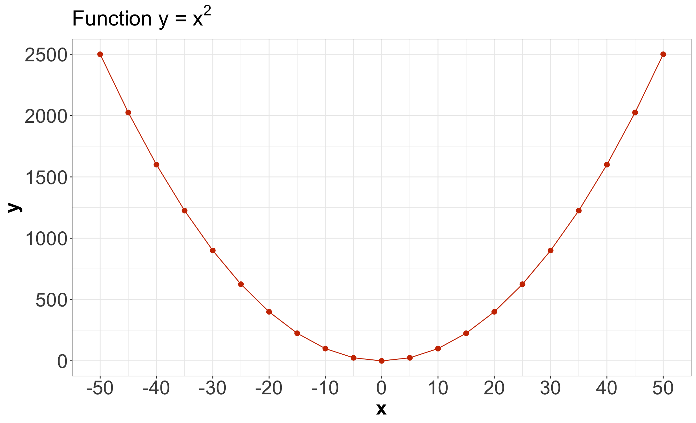

| LOS | Probability |
|---|---|
| 1 | 0.25 |
| 2 | 0.35 |
| 3 | 0.20 |
| 4 | 0.10 |
| 5 | 0.10 |
Joint Probability
Lecture 3
Please, sign in on iClicker
Today’s Learning Goals
By the end of this lecture, we will be able to…
- Calculate marginal distributions from a joint distribution of random variables.
- Describe the probabilistic consequences of working with independent random variables.
And…
- Calculate and describe covariance in multivariate cases (i.e., with more than one random variable).
- Calculate and describe two mainstream correlation metrics: Pearson’s correlation and Kendall’s \(\tau_K\).
Outline
- Joint Distributions
- Independence and Dependence Concepts
1. Joint Distributions
- So far, we have only considered one random variable at a time which has an univariate distribution.
- However, we very often have more than one random variable.

Coins come again!
- Consider two independent fair coins (i.e., two independent Bernoulli random variables!).
- The sample space is: \(\texttt{HH}\), \(\texttt{HT}\), \(\texttt{TH}\), \(\texttt{TT}\), each with a probability \(0.25\).
- The joint distribution of this process is the following:
| \(X/Y\) | \(\texttt{H}\) | \(\texttt{T}\) |
|---|---|---|
| \(\texttt{H}\) | 0.25 | 0.25 |
| \(\texttt{T}\) | 0.25 | 0.25 |
Random Variable Setup
- Let us set the following binary random variables (since each one could only have two outcomes, \(\texttt{H}\) or \(\texttt{T}\)):
\[\begin{gather*} X = \text{First coin's outcome.} \\ Y = \text{Second coin's outcome.} \end{gather*}\]
Computing Probabilities
- Each cell of the previous joint distribution is computed as:
\[\begin{align*} P(X = \texttt{H} \cap Y = \texttt{H}) &= P(X = \texttt{H}) \cdot P(Y = \texttt{H}) \qquad \text{independence} \\ &= 0.5 \cdot 0.5 \qquad \text{fair coins} \\ &= 0.25. \end{align*}\]
Can we have an univariate setup?
- Alternatively, we can define the following random variable:
\[Z = \text{Outcomes obtained when tossing two independent coins.}\]
| Outcome | Probability |
|---|---|
| \(\texttt{HH}\) | 0.25 |
| \(\texttt{HT}\) | 0.25 |
| \(\texttt{TH}\) | 0.25 |
| \(\texttt{TT}\) | 0.25 |
1.1. Example: Length of Stay Versus Gang Demand
- We will work with the following joint distribution of length of stay (\(\text{LOS}\)) of a ship and its gang demand (\(\text{Gangs}\)).
- Consider an example that a Vancouver port faces with gang demand.
- When a ship arrives, they request a certain number of gangs to unload the ship.
Probability Mass Function (PMF) for Gangs

PMF for Length of Stay
Now, we might wonder…
What is the probability that a ship requires 4 gangs AND will stay in port for 5 days?
- The information provided by both separate PMFs (\(\text{Gangs}\) and \(\text{LOS}\)) is not sufficient to answer this question.
- We would need to use a joint distribution between \(\text{LOS}\) and \(\text{Gangs}\).
Before, let us define the following:
- In a random system/process with more than one random variable, the distribution of a standalone variable is called a marginal distribution.
Now, going back to the joint distribution…
- We need a probability for every possible combination of the number of \(\text{Gangs}\) and \(\text{LOS}\).
- In this case, \(5 \times 4 = 20\) probabilities (that again add up to 1).
| Gangs = 1 | Gangs = 2 | Gangs = 3 | Gangs = 4 | |
|---|---|---|---|---|
| LOS = 1 | 0.00170 | 0.04253 | 0.12471 | 0.08106 |
| LOS = 2 | 0.02664 | 0.16981 | 0.13598 | 0.01757 |
| LOS = 3 | 0.05109 | 0.11563 | 0.03203 | 0.00125 |
| LOS = 4 | 0.04653 | 0.04744 | 0.00593 | 0.00010 |
| LOS = 5 | 0.07404 | 0.02459 | 0.00135 | 0.00002 |
Now, we might wonder…
Could the 20 numbers in the joint distribution be absolutely ANY probabilities between 0 and 1?
No, we have the following restrictions:
- They are restricted by the fact that they will need to add up to 1 (recall the Law of Total Probability!).
- We need the joint distribution to be consistent with those marginal distributions.
1.2. Calculating Marginal Distributions from the Joint Distribution
- In the case of discrete random variables, we add up the probabilities of the corresponding standalone outcomes.
| Gangs = 1 | Gangs = 2 | Gangs = 3 | Gangs = 4 | |
|---|---|---|---|---|
| LOS = 1 | 0.00170 | 0.04253 | 0.12471 | 0.08106 |
| LOS = 2 | 0.02664 | 0.16981 | 0.13598 | 0.01757 |
| LOS = 3 | 0.05109 | 0.11563 | 0.03203 | 0.00125 |
| LOS = 4 | 0.04653 | 0.04744 | 0.00593 | 0.00010 |
| LOS = 5 | 0.07404 | 0.02459 | 0.00135 | 0.00002 |
Let us start with the marginal distribution of \(\text{LOS}\)…
- We can compute \(P(\text{LOS} = 1)\).
- Thus, there are four ways this could happen:
- \(\text{LOS} = 1\) and \(\text{Gangs} = 1\).
- \(\text{LOS} = 1\) and \(\text{Gangs} = 2\).
- \(\text{LOS} = 1\) and \(\text{Gangs} = 3\).
- \(\text{LOS} = 1\) and \(\text{Gangs} = 4\).
So, to find the marginal probability \(P(\text{LOS} = 1)\)…
\[\begin{align*} P(\text{LOS} = 1) &= P(\text{LOS} = 1 \cap \text{Gangs} = 1) + \\ & \quad \quad P(\text{LOS} = 1 \cap \text{Gangs} = 2) + \\ & \quad \quad \quad P(\text{LOS} = 1 \cap \text{Gangs} = 3) + \\ & \quad \quad \quad \quad P(\text{LOS} = 1 \cap \text{Gangs} = 4) \\ &= 0.00170 + 0.04253 + 0.12471 + 0.08106 \\ &= 0.25. \end{align*}\]
We have \(P(\text{LOS} = 1)\)…
- But we would also need \(P(\text{LOS} = 2)\), \(P(\text{LOS} = 3)\), etc.
- Thus, we add up each row from our joint distribution.
Now for \(\text{Gangs}\)!
- Note both marginals computed from the joint are consistent with our initial marginals.
iClicker Question
Answer TRUE or FALSE:
We obtain a marginal distribution by summing the rows of a joint distribution; therefore, each row of a joint distribution must sum to 1.
A. TRUE
B. FALSE
2. Independence and Dependence Concepts
- A big part of Data Science is about harvesting the relationship between the variables in our datasets.
2.1. Independence
- Let \(X\) and \(Y\) be two random variables.
- \(X\) and \(Y\) are independent if knowing something about one of them tells us nothing about the other: \[P(X = x \cap Y = y) = P(X = x) \cdot P(Y = y).\]
- We would only need the marginals to obtain their joint distribution.
Going back to the two coins!
- Recall we had this joint distribution:
\[\begin{gather*} X = \text{First coin's outcome.} \\ Y = \text{Second coin's outcome.} \end{gather*}\]
| \(X/Y\) | \(\texttt{H}\) | \(\texttt{T}\) |
|---|---|---|
| \(\texttt{H}\) | 0.25 | 0.25 |
| \(\texttt{T}\) | 0.25 | 0.25 |
Obtaining the Marginals from the Joint
We can see that the two coin flips are independent:
\[\begin{align*} P(X = \texttt{H}) &= P(X = \texttt{H} \cap Y = \texttt{H}) + P(X = \texttt{H} \cap Y = \texttt{T}) \\ &= 0.25 + 0.25 = 0.5 \\ P(X = \texttt{T}) &= P(X = \texttt{T} \cap Y = \texttt{H}) + P(X = \texttt{T} \cap Y = \texttt{T}) \\ &= 0.25 + 0.25 = 0.5 \\ P(Y = \texttt{H}) &= P(X = \texttt{H} \cap Y = \texttt{H}) + P(X = \texttt{T} \cap Y = \texttt{H}) \\ &= 0.25 + 0.25 = 0.5 \\ P(Y = \texttt{T}) &= P(X = \texttt{H} \cap Y = \texttt{T}) + P(X = \texttt{T} \cap Y = \texttt{T}) \\ &= 0.25 + 0.25 = 0.5. \end{align*}\]
Applying the Independence Property via the Marginals
\[\begin{align*} P(X = \texttt{H} \cap Y = \texttt{H}) &= P(X = \texttt{H}) \cdot P(Y = \texttt{H}) \\ &= 0.5 \cdot 0.5 = 0.25 \\ P(X = \texttt{H} \cap Y = \texttt{T}) &= P(X = \texttt{H}) \cdot P(Y = \texttt{T}) \\ &= 0.5 \cdot 0.5 = 0.25 \\ P(X = \texttt{T} \cap Y = \texttt{H}) &= P(X = \texttt{T}) \cdot P(Y = \texttt{H}) \\ &= 0.5 \cdot 0.5 = 0.25 \\ P(X = \texttt{T} \cap Y = \texttt{T}) &= P(X = \texttt{T}) \cdot P(Y = \texttt{T}) \\ &= 0.5 \cdot 0.5 = 0.25. \end{align*}\]
Let us check another two-coin case…
\[\begin{gather*} X = \text{First coin's outcome} \\ Y = \text{Second coin's outcome.} \end{gather*}\]
| \(X/Y\) | \(\texttt{H}\) | \(\texttt{T}\) |
|---|---|---|
| \(\texttt{H}\) | 0.2 | 0.6 |
| \(\texttt{T}\) | 0.05 | 0.15 |
Computing the Marginals
\[\begin{align*} P(X = \texttt{H}) &= P(X = \texttt{H} \cap Y = \texttt{H}) + P(X = \texttt{H} \cap Y = \texttt{T}) \\ &= 0.2 + 0.6 \\ &= 0.8. \end{align*}\]
- By the Law of Total Probability, we can obtain: \[\begin{align*} P(X = \texttt{T}) &= 1 - P(X = \texttt{H})\\ &= 1 - 0.8 \\ &= 0.2. \end{align*}\]
And likewise for the second coin…
\[\begin{align*} P(Y = \texttt{H}) &= P(X = \texttt{H} \cap Y = \texttt{H}) + P(X = \texttt{T} \cap Y = \texttt{H}) \\ &= 0.2 + 0.05 \\ &= 0.25. \end{align*}\]
- By the Law of Total Probability, we can obtain: \[\begin{align*} P(Y = \texttt{T}) &= 1 - P(Y = \texttt{H})\\ &= 1 - 0.25 \\ &= 0.75. \end{align*}\]
Applying the Independence Property via the Marginals
- These two coins are also independent!
\[\begin{align*} P(X = \texttt{H} \cap Y = \texttt{H}) &= P(X = \texttt{H}) \cdot P(Y = \texttt{H}) \\ &= 0.8 \cdot 0.25 = 0.2 \\ P(X = \texttt{H} \cap Y = \texttt{T}) &= P(X = \texttt{H}) \cdot P(Y = \texttt{T}) \\ &= 0.8 \cdot 0.75 = 0.6 \\ P(X = \texttt{T} \cap Y = \texttt{H}) &= P(X = \texttt{T}) \cdot P(Y = \texttt{H}) \\ &= 0.2 \cdot 0.25 = 0.05 \\ P(X = \texttt{T} \cap Y = \texttt{T}) &= P(X = \texttt{T}) \cdot P(Y = \texttt{T}) \\ &= 0.2 \cdot 0.75 = 0.15. \end{align*}\]
But there is no independence in this other two-coin case!
\[\begin{gather*} X = \text{First coin's outcome} \\ Y = \text{Second coin's outcome.} \end{gather*}\]
| \(X/Y\) | \(\texttt{H}\) | \(\texttt{T}\) |
|---|---|---|
| \(\texttt{H}\) | 0.5 | 0 |
| \(\texttt{T}\) | 0 | 0.5 |
2.2. Measures of Dependence
- Let us ask ourselves the following:
What if two random variables are not independent?
Is there some measure of dependence?
2.2.1. Covariance and Pearson’s Correlation
- Covariance is one common way of measuring dependence between two numeric random variables.
- It measures the amount of dependence and direction:
\[\begin{align*} \operatorname{Cov}(X, Y) &= \mathbb{E}[(X-\mu_X)(Y-\mu_Y)] \\ &= \mathbb{E}(XY) - \mathbb{E}(X)\mathbb{E}(Y). \end{align*}\]
Going back to our cargo ship example!
| Gangs = 1 | Gangs = 2 | Gangs = 3 | Gangs = 4 | |
|---|---|---|---|---|
| LOS = 1 | 0.00170 | 0.04253 | 0.12471 | 0.08106 |
| LOS = 2 | 0.02664 | 0.16981 | 0.13598 | 0.01757 |
| LOS = 3 | 0.05109 | 0.11563 | 0.03203 | 0.00125 |
| LOS = 4 | 0.04653 | 0.04744 | 0.00593 | 0.00010 |
| LOS = 5 | 0.07404 | 0.02459 | 0.00135 | 0.00002 |
- For a larger \(\text{LOS}\), there are larger probabilities associated with a smaller gang demand.
Coding Up the Marginal PMFs
# A tibble: 5 × 2
n_days p
<dbl> <dbl>
1 1 0.25
2 2 0.35
3 3 0.2
4 4 0.1
5 5 0.1 # A tibble: 4 × 2
n_gangs p
<dbl> <dbl>
1 1 0.2
2 2 0.4
3 3 0.3
4 4 0.1Computing Marginals Expected Values
Hence:
\[\mathbb{E}(\text{LOS}) = 2.45\] \[\mathbb{E}(\text{Gangs}) = 2.3.\]
Melting joint_distribution (manually!)
joint_distribution <- data.frame(
LOS = c(rep(1, 4), rep(2, 4), rep(3, 4), rep(4, 4), rep(5, 4)),
Gangs = rep(1:4, 5),
p = c(
0.00170, 0.04253, 0.12471, 0.08106,
0.02664, 0.16981, 0.13598, 0.01757,
0.05109, 0.11563, 0.03203, 0.00125,
0.04653, 0.04744, 0.00593, 0.00010,
0.07404, 0.02459, 0.00135, 0.00002
)
)
joint_distribution LOS Gangs p
1 1 1 0.00170
2 1 2 0.04253
3 1 3 0.12471
4 1 4 0.08106
5 2 1 0.02664
6 2 2 0.16981
7 2 3 0.13598
8 2 4 0.01757
9 3 1 0.05109
10 3 2 0.11563
11 3 3 0.03203
12 3 4 0.00125
13 4 1 0.04653
14 4 2 0.04744
15 4 3 0.00593
16 4 4 0.00010
17 5 1 0.07404
18 5 2 0.02459
19 5 3 0.00135
20 5 4 0.00002Computing the Crossed Expected Value
Thus:
\[\mathbb{E}(\text{LOS} \cdot \text{Gangs}) = 4.89956.\]
Computing the Covariance
\[\begin{align*} \operatorname{Cov}(\text{LOS}, \text{Gangs}) &= \mathbb{E}(\text{LOS} \cdot \text{Gangs}) - \mathbb{E}(\text{LOS})\mathbb{E}(\text{Gangs}) \\ &= 4.89956 - \left[ (2.45)(2.3) \right] \\ &= -0.73544. \end{align*}\]
- Indeed, we can see that the covariance between \(\text{LOS}\) and \(\text{Gangs}\) is negative.
- A negative sign indicates that an increase in \(\text{LOS}\) is associated with a decrease in \(\text{Gangs}\).
Covariance Drawback
- This measure depends on the spread of the random variables \(X\) and \(Y\).
- For instance, if we multiply \(X\) by 10, then the covariance of \(X\) and \(Y\) increases by a factor of 10 as well: \[\begin{align*} \operatorname{Cov}(10X,Y) &= \mathbb{E}(10XY) - \mathbb{E}(10X) \mathbb{E}(Y) \\ &= 10\mathbb{E}(XY) - 10\mathbb{E}(X)\mathbb{E}(Y) \\ &= 10[\mathbb{E}(XY) - \mathbb{E}(X) \mathbb{E}(Y)] \\ &= 10\operatorname{Cov}(X,Y). \end{align*}\]
Pearson’s Correlation
- Pearson’s correlation standardizes the distances according to the standard deviations \(\sigma_X\) and \(\sigma_Y\) of \(X\) and \(Y\), respectively. \[\begin{align*} \operatorname{Corr}(X, Y) &= \mathbb{E} \left[ \left(\frac{X-\mu_X}{\sigma_X}\right) \left(\frac{Y-\mu_Y}{\sigma_Y}\right) \right] \\ &= \frac{\operatorname{Cov}(X, Y)}{\sqrt{\operatorname{Var}(X)\operatorname{Var}(Y)}}. \end{align*}\]
- It turns out that \(-1 \leq \text{Corr}(X, Y) \leq 1\).
Pearson’s Correlation Scale
- \(-1\) means a perfect negative linear relationship between \(X\) and \(Y\).
- \(0\) means no linear relationship (however, this does not mean independence!).
- \(1\) means a perfect positive linear relationship.
iClicker Question
Answer TRUE or FALSE:
Covariance can be negative, but not the variance.
A. TRUE
B. FALSE
iClicker Question
Answer TRUE or FALSE:
Without any further assumptions between random variables \(X\) and \(Y\), covariance is calculated as
\[\operatorname{Cov}(X,Y) = \mathbb{E}(XY) - \left[ \mathbb{E}(X) \mathbb{E}(Y) \right].\]
Computing \(\mathbb{E}(XY)\) requires the joint distribution, but computing \(\mathbb{E}(X) \mathbb{E}(Y)\) only requires the marginals.
A. TRUE
B. FALSE
2.2.2. Kendall’s \(\tau_K\)
- Pearson’s correlation measures linear dependence.
- This might be a big downfall, since many relationships between real-world variables are not linear.
- Hence, there is an alternative measure called Kendall’s \(\tau_K\).
Characteristics of Kendall’s \(\tau_K\)
- Kendall’s \(\tau_K\) can measure non-linear dependence.
- It measures concordance between each pair of observations \((x_i, y_i)\) and \((x_j, y_j)\) with \(i \neq j\):
Characteristics of Kendall’s \(\tau_K\)
Formal Definition
- Kendall’s \(\tau_K\) averages the amount of concordance and discordance by taking the difference between the number of concordant and number of discordant pairs.
- The formal definition with \(n\) data pairs is
\[\tau_K = \frac{\text{Number of concordant pairs} - \text{Number of discordant pairs}}{{n \choose 2}}.\]
- Kendall’s \(\tau_K\) is between -1 and 1, and measures dependence’s strength (and direction).
First Example
- Consider the two correlation measures: Pearson and Kendall’s \(\tau_K\).
- We will hypothetical dataset called
non_linear_functionwith \(n = 21\) where: \[y = x^{1/3}.\]
Coding Up non_linear_function
Plotting non_linear_function

Computing Correlation Metrics
Second Example
- Consider the two correlation measures: Pearson and Kendall’s \(\tau_K\).
- We will hypothetical dataset called
parabola_pairswith \(n = 21\) where: \[y = x^2.\]
Coding Up parabola_pairs
Plotting parabola_pairs

Computing Correlation Metrics
- Patterns like a parabola are not monotonically increasing or decreasing.
- Thus, neither Pearson nor Kendall’s \(\tau_K\) will capture the parabola pattern.
2.3. Variance of a Sum Involving Two Non-Independent Random Variables
- Suppose \(X\) and \(Y\) are not independent random variables.
- Therefore: \[\operatorname{Var}(X + Y) = \operatorname{Var}(X) + \operatorname{Var}(Y) + 2\operatorname{Cov}(X, Y).\]
If \(X\) and \(Y\) are independent, then…
\[\mathbb{E}(XY) = \mathbb{E}(X) \mathbb{E}(Y).\]
- Finally:
\[\begin{align*} \operatorname{Var}(X + Y) &= \operatorname{Var}(X) + \operatorname{Var}(Y) + 2\operatorname{Cov}(X, Y) \\ &= \operatorname{Var}(X) + \operatorname{Var}(Y) + 2 \left\{ \mathbb{E}(XY) - \left[ \mathbb{E}(X)\mathbb{E}(Y) \right] \right\} \\ &= \operatorname{Var}(X) + \operatorname{Var}(Y) + 2 \underbrace{\left\{ \left[ \mathbb{E}(X) \mathbb{E}(Y) \right] - \left[ \mathbb{E}(X)\mathbb{E}(Y) \right] \right\}}_{0} \\ &= \operatorname{Var}(X) + \operatorname{Var}(Y). \end{align*}\]

DSCI 551 - Descriptive Statistics and Probability for Data Science